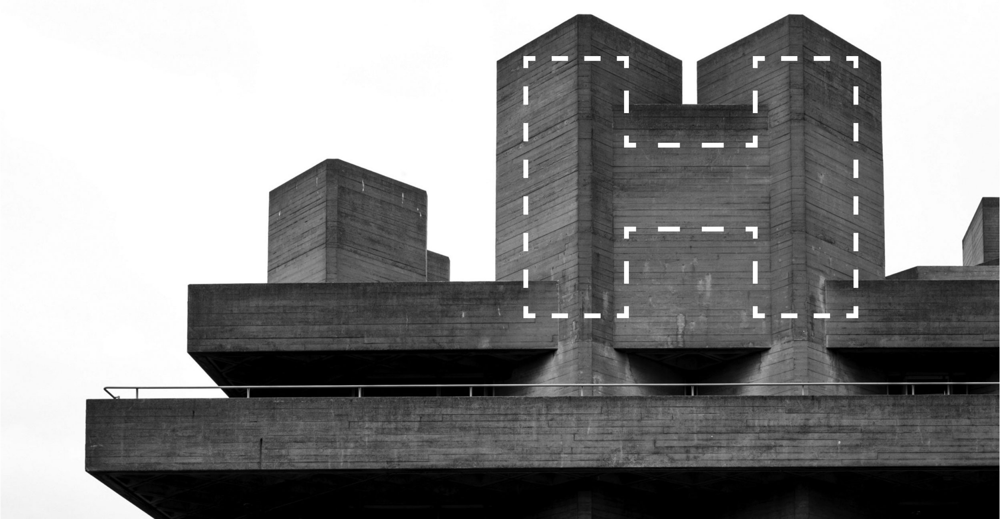
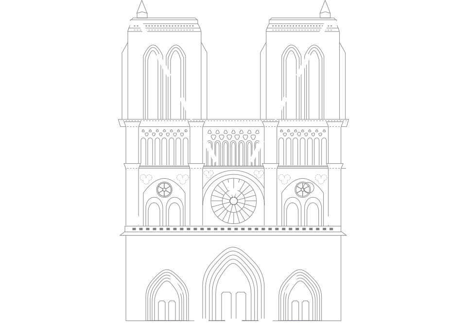
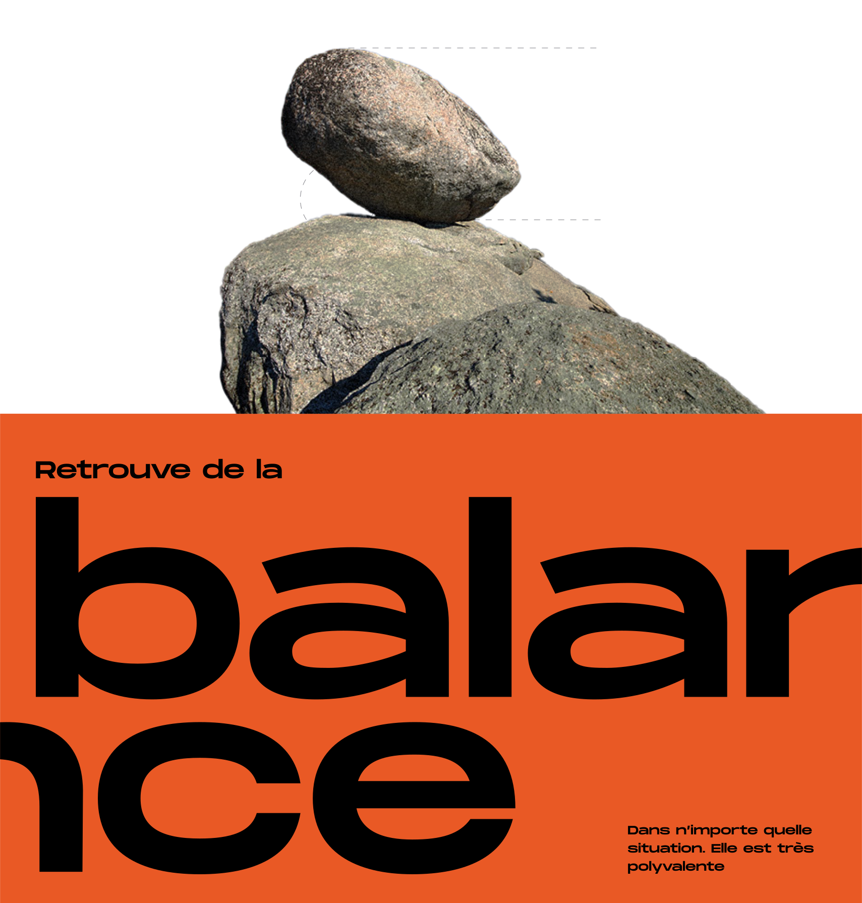
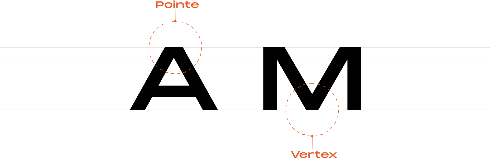

Une police
audacieuse
audacieuse

Une courte introduction
8 styles différents,
avec 398 glyphes pour chaque
avec 398 glyphes pour chaque
La Monument Extended est une police de caractères étendue de qualité puissante avec une grande polyvalence.
Cette police étendue peut être utilisée pour des déclarations éditoriales audacieuses, des impressions graphiques lourdes ou tout simplement comme un simple logo.
Courte, mais
PUISSANTE
PUISSANTE

Morphologie et personnalité
01.
La hauteur de la police ressemble à notre conception métaphorique de la gravité.
Les polices courtes véhiculent lourdeur et stabilité.
La Monument Extended a une personnalité assez imposante, elle est parfaite pour décrire la durabilité et l'immobilité, elle reste stable peu importe les circonstances.
La position de son
centre d'inertie entraine
rapidement son équilibre
centre d'inertie entraine
rapidement son équilibre


Anatomie
basique
basique


Majuscules et miniscules
02.
Une diffèrence d'un sixième près
On prenant la lettre "A" comme exemple, nous remarquons que la diffèrence entre le Cap Height et le X-Height est égale à un sixième de la taille du Cap Height.
Cette différence qui est très petite justifie bien la stabilité et le caractère imposant de la Monument Extended.
Une diffèrence d'un sixième près

Une approche géométrique
03.
Une conceptualisation basée sur une grille de 8
La diffèrence entre la taille du X Height plus le descender et celle Du X Height est de deux septièmes. On peur bien voir ça en alignatn les deux lettre c et q.
On peut en déduire que le concepteur est parti d'une base de en donnant une très grande proportion au X Height comparé aux autres attributs du caractère. Une diffèrence d'un sixième près
On peut en déduire que le concepteur est parti d'une base de en donnant une très grande proportion au X Height comparé aux autres attributs du caractère. Une diffèrence d'un sixième près
Anatomie
détaillée
détaillée

Des formes
proportionelles
proportionelles

Anatomie et morphologie
04.
La monument Extended est une typographie assez symétrique et très proportionnelle
On remarque bien que tout au long de son processus créatif le concepteur a cherché à lier l’ensemble des éléments de chaque caractère.
L’angle du vertex est à peu près le double de l’angle de l’artex avec une légère différence qui permet de rendre la typographie plus naturelle et plus lisible. Dans la même logique, l’angle de l’arc du stem est à peu près le quadruple de celui du vertex.
On retrouve aussi une parfaite symétrie entre la distance qui se trouve entre le Cap Height et le l’artex et celle entre la baseline et le vertex (42px).
Le caractère imposant de cette typographie ainsi que sa base solide reviennent principalement aux sources d’inspirations du concepteur qui sont l’architecture et le mouvement brutaliste.
L’angle du vertex est à peu près le double de l’angle de l’artex avec une légère différence qui permet de rendre la typographie plus naturelle et plus lisible. Dans la même logique, l’angle de l’arc du stem est à peu près le quadruple de celui du vertex.
On retrouve aussi une parfaite symétrie entre la distance qui se trouve entre le Cap Height et le l’artex et celle entre la baseline et le vertex (42px).
Le caractère imposant de cette typographie ainsi que sa base solide reviennent principalement aux sources d’inspirations du concepteur qui sont l’architecture et le mouvement brutaliste.
Typetester 1
Testeur et typographie
01.
Aperçu des 8 styles de la Monument Extended
Regular
M
|
M
|
M
|
M
|
M
|
M
|
M
|
M
|
M
Typetester 2
Testeur et typographie
02.
Tous le potentiel de la Monument Extended
I
U
Glyphes